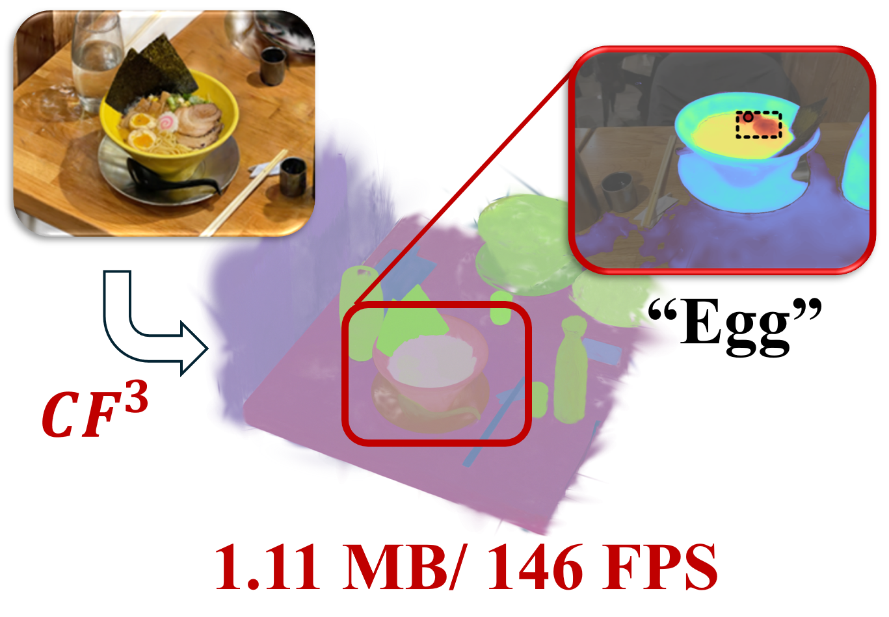

|
Hyunjoon Lee I am an integrated MS/PhD student at VGI Lab (Visual and Geometric Intelligence Lab) at Seoul National University, where I am advised by Prof. Jaesik Park. |

|
Education
|
ResearchMy research interests lie at the intersection of 3D vision and robotics. I am particularly interested in how we can leverage rich scene information to enhance robot manipulation capabilities in complex environments. |
|  |
CF3: Compact and Fast 3D Feature Fields
Hyunjoon Lee, Joonkyu Min, Jaesik Park, ICCV, 2025 project page / arXiv / code We propose a method to build compact and fast 3D Gaussian feature fields by effectively compressing and sparsifying Gaussians, achieving competitive performance with significantly fewer gaussians. |
Awards & Honors
|
Patents
|
|
Template from Jon Barron's website. |